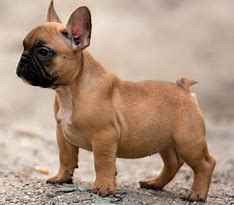

Si estás buscando un mejor amigo adorable con un imán especial para los problemas, aquí tienes al bulldog francés. Esta raza, originaria de Inglaterra, ha adquirido gran popularidad en los últimos años gracias a sus graciosas orejas de murciélago y su cara enfurruñada.
Pero no es solo el aspecto del bulldog francés el que nos despierta ternura, sino también su comportamiento juguetón y afectuoso, así como su increíblemente encantadora personalidad.El bulldog francés es un perro pequeño de aspecto encantador que parece un bulldog en miniatura, pero con orejas puntiagudas, aunque tiene la misma cara achatada, cola corta y suave y pelaje corto (si bien en un envase mucho más pequeño). Aunque sea un perro de pequeño tamaño, es musculoso y tiene una estructura ósea robusta y patas fuertes. En cuanto al pelaje, el bulldog francés puede presentar varios colores, que van del negro al blanco y canela, pasando por el chocolate o incluso lila, aunque este último no es muy frecuente.
Pese a que el bulldog francés puede dar la impresión de ser un perro muy atlético por su aspecto regordete y puede disfrutar de un poco de actividad física, a veces puede pasarse todo el día tumbado. Se trata de un perro sociable, afable y juguetón, lo que lo convierte en un compañero afectuoso y divertido ideal o en un perro de compañía que disfruta viviendo en pueblos y ciudades igual que si estuviera en el campo. Es difícil determinar el temperamento del bulldog francés, ya que puede variar de inquieto y juguetón a totalmente tranquilo. Además, el bulldog francés no suele ladrar demasiado, por lo que resulta una mascota excelente para tener en un piso.
También se le conoce porque le encanta jugar tanto como disfrutar de una larga siesta, y siempre se puede contar con su naturaleza exploradora y su curiosidad natural por todo lo que le rodea. A pesar de su aspecto torpón, se trata de una criatura muy inteligente que adoran el contacto con los humanos y fácil de adiestrar.
El bulldog francés es un perro valiente que se cree mucho más grande de lo que realmente es y que, a veces, se mete en problemas con otros perros que no saben interpretar su cara achatada y su cola diminuta.
Es una raza idónea para propietarios que vivan en espacios reducidos y que no deseen un perro que deba hacer mucho ejercicio, pero que disfruten mucho con el juego y la interacción en casa. Y, probablemente, a los que tampoco les importen mucho los ronquidos. Curiosidades del bulldog francés